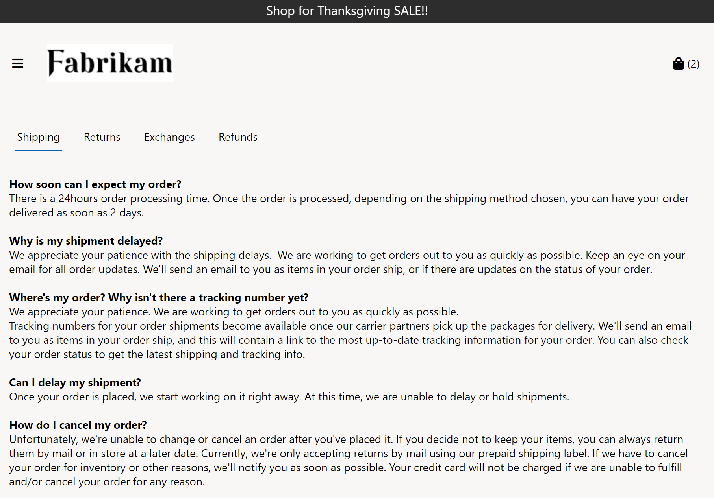

Registerkartenmodul
Important
Dynamics 365 Retail ist jetzt Dynamics 365 Commerce und bietet umfassende Handelsfunktionen für alle Kanäle – von E-Commerce über Shops bis hin zu Callcentern. Weitere Informationen zu diesen Änderungen finden Sie unter Microsoft Dynamics 365 Commerce.
Dieses Thema enthält Registerkartenmodule und es wird beschrieben, wie diese den Siteseiten in Microsoft Dynamics 365 Commerce hinzugefügt werden.
Übersicht
Registerkartenmodule sind containerähnliche Module, mit denen die Informationen auf einer Site-Seite auf Registerkarten organisiert werden. Sie können auf jeder Seite verwendet werden, auf der Informationen auf Registerkarten angezeigt werden müssen.
In jedem Registerkartenmodul kann ein oder mehrere Registerkartenelemente hinzugefügt werden. Jedes Registerkartenelementmodul repräsentiert eine einzelne Registerkarte. In jedem Registerkartenelementmodul können ein oder mehrere Module hinzugefügt werden. Es gibt keine Einschränkungen hinsichtlich der Modultypen, die einem Registerkartenelementmodul hinzugefügt werden können.
Das folgende Bild zeigt ein Beispiel eines Registerkartenmoduls, das auf einer Homepage verwendet wird. In diesem Beispiel ist die Versand Registerkarte ausgewählt.

Registerkartenmoduleigenschaften
| Eigenschaftenname | Werte | Beschreibung |
|---|---|---|
| Überschrift | Text | Diese Eigenschaft gibt eine optionale Textüberschrift für das Registerkartenmodul an. |
| Aktiver Registerkartenindex | Nummer | Diese Eigenschaft gibt die Registerkarte an, die beim Laden einer Seite standardmäßig aktiv sein soll. Wenn kein Wert angegeben wird, ist das erste Registerkartenelement standardmäßig aktiv. |
Registerkartenelementmoduleigenschaften
| Eigenschaftenname | Werte | Beschreibung |
|---|---|---|
| Titel | Text | Diese Eigenschaft gibt die Textüberschrift für das Registerkartenelementmodul an. |
Ein Registerkartenmodul einer Seite hinzufügen
Um ein Registerkartenmodul einer Seite hinzuzufügen und die erforderlichen Eigenschaften festzulegen, führen Sie die folgenden Schritte aus.
- Verwenden Sie die Fabrikam-Marketingvorlage (oder eine Vorlage ohne Einschränkungen), um eine neue Seite mit dem Namen Richtlinienseite speichern zu erstellen.
- Auf der Standardseite wählen Sie Haupt-Slot und wählen dann die Ellipsen (...) und wählen Modul hinzufügen.
- Wählen Sie im Dialogfeld Modul hinzufügen wählen Sie das Modul Container und dann OK aus.
- Wählen Sie im Slot Container die Ellipsen-Schaltfläche (...) und wählen Sie Modul hinzufügen.
- Wählen Sie im Dialogfeld Modul hinzufügen das Modul Registerkarte und dann OK aus.
- Wählen Sie im Eigenschaftenbereich des Registerkartenmoduls die Option Überschrift neben dem Stiftsymbol.
- In dem Überschrift Dialogfeld unter Überschriftstext geben Sie den Überschriftentext ein (z. B. Richtlinien). Wählen Sie dann OK aus.
- Wählen Sie im Slot Registerkarte die Ellipsen-Schaltfläche (...) und wählen Sie Modul hinzufügen.
- Im Dialogfeld Modul hinzufügen wählen Sie das Registerkartenelement-Modul und wählen Sie dann OK.
- Im Eigenschaftenbereich des Registerkartenelementmoduls unter Titel geben Sie den Titeltext ein (z. B. Lieferung).
- Wählen Sie im Slot Registerkartenelement die Ellipsen-Schaltfläche (...) und wählen Sie Modul hinzufügen.
- Wählen Sie im Dialogfeld Modul hinzufügen das Modul Textblock und dann OK aus.
- Fügen Sie im Eigenschaftenbereich des Textblockmoduls unter Rich Text einen Textabschnitt hinzu.
- Im Slot Registerkarte fügen Sie einige weitere Registerkartenelementmodule mit Titeln hinzu. Fügen Sie in jedem Registerkartenelementmodul ein Textblockmodul mit Inhalt hinzu.
- Wählen Speichern und dann Vorschau aus, um eine Vorschau der Seite anzuzeigen. Auf der Seite wird ein Registerkartenmodul angezeigt, das Registerkartenelementmodule enthält, deren Inhalt Sie hinzugefügt haben.
- Wählen Bearbeiten beenden, um die Seite einzuchecken, und wählen Sie dann Veröffentlichen, um sie zu veröffentlichen.